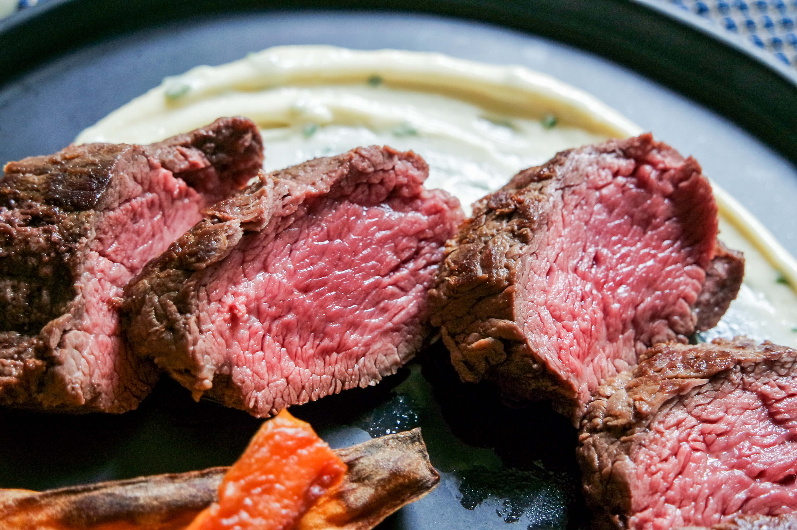

home
wagyu ribeye (
the simple way
)
ingredients
an a5 8oz wagyu ribeye steak
butter
garlic
thyme
salt & pepper (to taste)
* consuming raw meat may pose a food borne illness, proceed at your own risk *

instructions
heat up your pan to be ripping hot (and preferably a cast iron)
add about half a stick of butter and let it melt
once fully melted but not burnt, add your steak and lower the heat. cook to desired temperature, i usually do 4-5 minutes per side.
add more butter, the garlic, and lower the temperature. baste the steak for the remaining time and desired doneness.
pour the remaining butter over steak, let rest for minimum 5 minutes, and then serve!